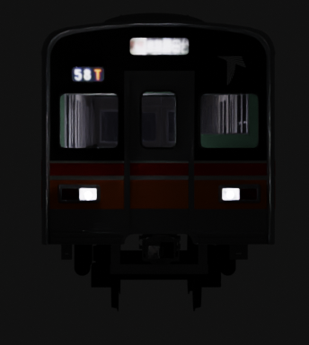

Toyo Rapid 1000 series
everything i know
since a lot of documentation of the tōyō rapid 1000 series is only in japanese, i decided to compile some knowledge in english.
So, Tōyō Rapid 1000 series was an electric multiple unit, and were in 10-car sets.
They consisted of eight motored cars ("M") and two trailer cars ("T") at the both ends.

As you probably noticed, the car formation is unchanged from Tokyo metro 5000 series,
but the vehicle numbering is. Now, intead of numbers being assigned based on the equipment and order of manufacture,
they were based on the vehicle's coupling position.
